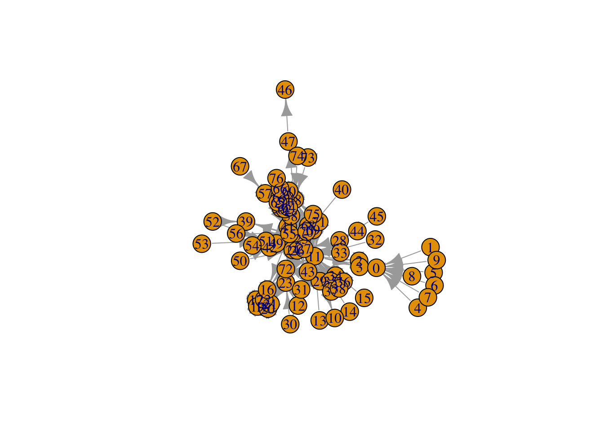
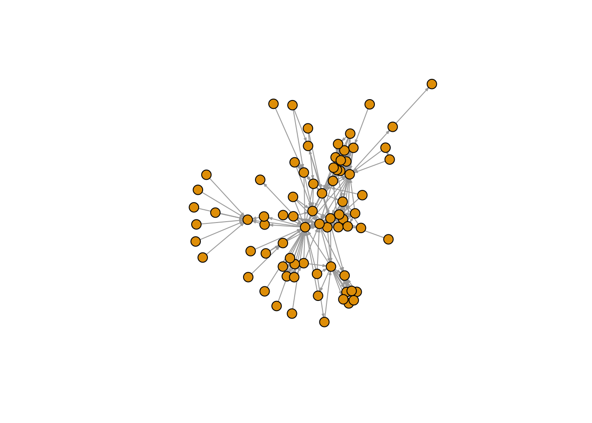

Chapter 3 First Graphs
3.1 Les Miserable Dataset
# Load igraph
library(igraph)
# Read data
lesmis <- read.csv("https://raw.githubusercontent.com/meefen/sna-ed/master/assets/lesmis/lesmis.csv")
# check the head (first 6 rows) of the dataset
head(lesmis)## Source Target weight
## 1 1 0 1
## 2 2 0 8
## 3 3 0 10
## 4 3 2 6
## 5 4 0 1
## 6 5 0 1# Create a graph using the graph_from_data_frame function
g <- graph_from_data_frame(lesmis)
# Plot the graph
plot(g)

3.2 Stop light
##
## Attaching package: 'tibble'## The following object is masked from 'package:igraph':
##
## as_data_frame